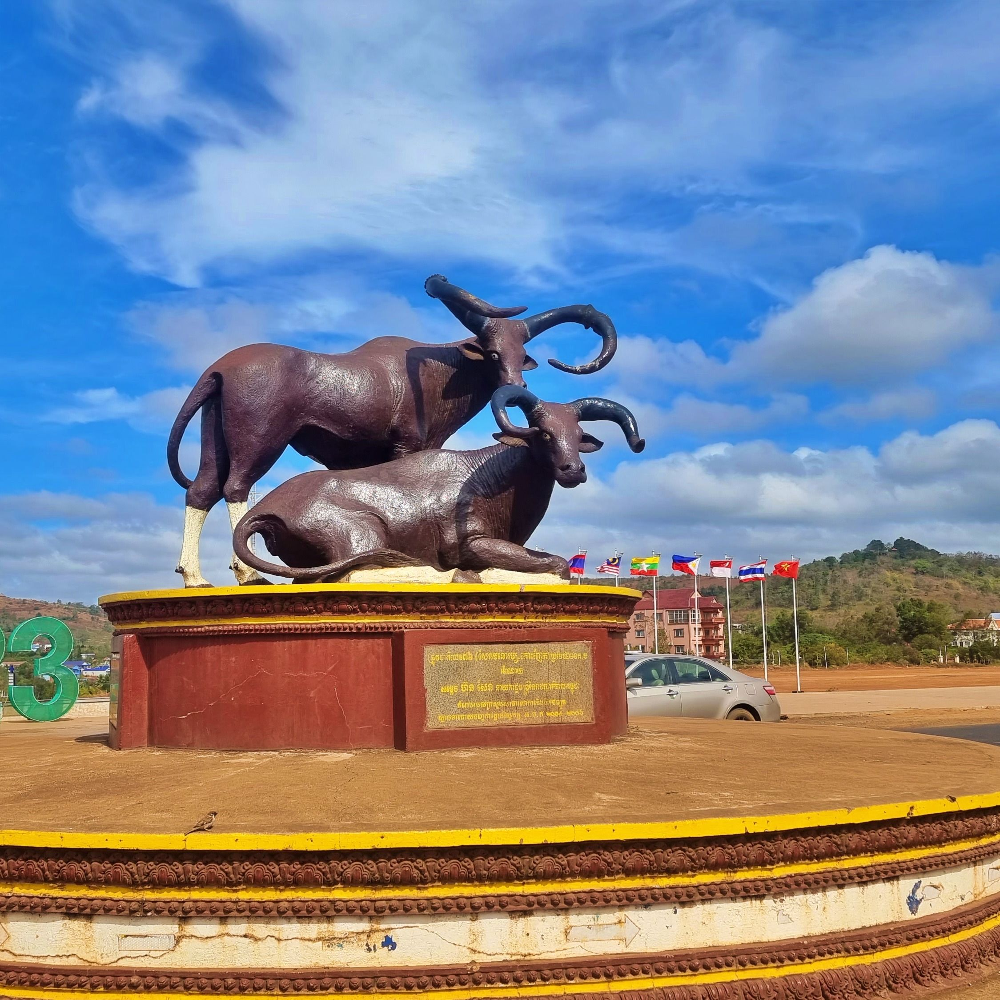

Mondulkiri is a province (khaet) of Cambodia. Bordering the provinces of Kratié to the west, Stung Treng to the northwest, Ratanakiri to the north, and the country of Vietnam to the east and south. It is the most sparsely populated province in the country despite being the largest in land area. The province was established in 1961 from the eastern part of Kratié province. The capital is the town of Senmonorom.
